基于神经网络的全双工干扰机自干扰对消方法¶
朱虹宇1，2，胡卫东1，2，王 超1，，施庆展1，张曦蒙1，2，袁乃昌1，2
（1．国防科技大学电子科学学院，湖南 长沙410003；
2．国防科技大学自动目标识别国家重点实验室，湖南 长沙410003）
摘 要：针对复杂而强的非线性自干扰信号的对消问题，分析全双工系统中发射泄露产生的自干扰信号的组 成及其非线性特性，基于多级隔离和对消自干扰的思想，提出一种数字域神经网络方法。神经网络通过快速学习 和感知侦收自干扰信道模型参数，能有效地对消泄露进来的自干扰信号。仿真实验结果表明，与传统的线性对消 和数字对消方法相比，所提方法能够快速适应雷达信号的变化，具有更强的自干扰抑制能力，为改善全双工干扰 机的性能提供了技术途径。
关键词：全双工干扰机；大功率信号；非线性特性；雷达信号变化；自干扰抑制能力
中图分类号：TN974
文献标志码：A
犇犗犐：10．12305／j．issn．1001506X．2025．01．02
犖犲狌狉犪犾狀犲狋狑狅狉犽犫犪狊犲犱狊犲犾犳犻狀狋犲狉犳犲狉犲狀犮犲犮犪狀犮犲犾犾犪狋犻狅狀犪狆狆狉狅犪犮犺犳狅狉 犳狌犾犾犱狌狆犾犲狓犼犪犿犿犲狉¶
ZHU Hongyu \(1 \cdot 2\) ，HU Weidong1，2，WANGChao1，，SHIQingzhan1， ZHANGXimeng1，2，YUANNaichang1，2
（1 ．犆狅犾犾犲犵犲 狅犳 犈犾犲犮狋狉狅狀犻犮 犛犮犻犲狀犮犲 犪狀犱 犜犲犮犺狀狅犾狅犵狔 ，犖犪狋犻狅狀犪犾 犝狀犻狏犲狉狊犻狋狔 狅犳 犇犲犳犲狀狊犲 犜犲犮犺狀狅犾狅犵狔 ， Changsha 4l0o03，China； 2. National Key Laboratory of Automatic Target Recognition, National Uniuersity of Defense Technology，Changsha 4looo3，China)
犃犫狊狋狉犪犮狋：Inviewoftheproblemofcancellationthecomplexandstrongnonlinearselfinterferencesignals， thepaperanalysesthecompositionandnonlinearcharacteristicsoftheselfinterferencesignalsgeneratedbythe leakageinfullduplexsystems．Andadigitaldomainneuralnetworkapproachisproposedbasedontheideaof multilevelisolationandselfinterferencecancellation．Theneuralnetworkquicklylearnsandperceivesthe parametersoftheselfinterferencechannelmodel，effectivelycancelingtheleakedselfinterferencesignals Simulationresultsshowthatcomparedtotraditionallinearcancellationanddigitalcancellationmethods，the proposedapproachcanrapidlyadapttochangesinradarsignals，exhibitingstrongerselfinterferencesuppression capabilityandprovidingatechnologicalpathwayforenhancingtheperformanceoffullduplexjammer
犓犲狔狑狅狉犱狊：fullduplexjammer；highpowersignal；nonlinearcharacteristics；changesinradarsignals； selfinterferencesuppressioncapability
0 引 言¶
雷达与干扰机之间的对抗是电磁对抗领域的核心问 题。为了应对雷达信号波形快速变化的挑战，干扰机需要 升级为全双工模式。全双工干扰机能够实时侦测当前雷达
信号，并利用调制算法生成干扰信号，从而制造虚假目标， 以掩盖或欺骗雷达探测，保护真实目标。
然而，由于尺寸限制和系统复杂的非线性效应，自干扰 信号 难 以 消 除［13］。例 如，同 相 正 交 相 位 （inphaseand quadraturephase，IQ）不平衡、高斯随机噪声、相位噪声
（phasenoise，PN）和高阶非线性自干扰信号都难以处 理［46］。为了解决这一问题，可以采用以下两种方法：一是 通过新算法和新系统架构设计，将自干扰降至接收机噪声 底限以下；二是通过多次转发，以迭代方式逐步降低自干 扰。与全双工通信系统相比，全双工干扰机无需实时解码 信号数据，对自干扰消除的要求相对较低。为了实现理想 的干扰效果，可以采用多域自干扰对消方法，降低接收机中 剩余自干扰信号对雷达信号侦收的干扰［710］。
自干扰信号抑制方法主要分为传播域自干扰抑制、模 拟域自干扰对消和数字域自干扰对消三类［1113］。传播域和 模拟域方法旨在避免接收机底噪增加和接收机饱和［1416］。 针对数字域中的剩余自干扰对消问题，可以采用传统的非 线性建模方法［1719］和深度学习方法［2022］。与计算机视觉 和语言处理等领域使用的大型模型不同，全双工系统中的 神经网络较小，所需训练数据也较少。
从长时间来看，环境的多径效应和功率放大器（power amplifier，PA）的工作状态都是动态变化的，因此自干扰信 道被认为是时缓变的，具有时变特性［2326］。即使在相同信 道中工作，也需要周期性地重新估计自干扰信道［2729］。此 外，全双工自干扰抑制方法面临三大挑战：准确建模复杂的 射频非理想因素、快速自适应时变和频变自干扰信道的方 法，以及实现复杂自干扰信道的高抑制性能的方法［3034］。 深度学习方法能够在提高自干扰抑制性能的同时，保持收 敛速度的平衡。
文献［1］对带内全双工（inbandfullduplex，IBFD）天 线技术进行综述，为促进IBFD系统天线技术的发展做出 了贡献。在数字域自干扰对消的必要性及其时机问题上， 文献［2］提出独到的观点，并通过实验数据进行充分验证。 文献［3］在提升自干扰抑制性能方面取得显著进展，提出理 论边界，并通过数值仿真证明其算法的卓越性能，接近理论 极限。与传统自适应算法相比，该算法具有更高的自干扰 抑制性能。
为实现理想的自干扰抑制效果，本文提出一种方法。 首先，通过分离发射天线和接收天线，有效降低接收机中的 自干扰，避免接收机饱和。此外，通过采用模拟域单抽头对 消技术，进一步抑制线性自干扰信号。接着，在数字域中进 一步消除非线性自干扰杂散信号，将自干扰降至接收机噪 声底限以下。
本文的其他部分安排如下：第1节详细地对非线性系 统进行建模；第2节给出了本文提出方法的具体数字域对 消算法；第3节进行了关键时间节点的切片分析；第4节和 第5节分别呈现数值仿真和实验实测的结果和结论。
1 系统模型¶
1．1 雷达系统非线性模型¶
如图1所示，本文提出一种全双工干扰机自干扰抑制 方法。与传统方法不同的是，该方法充分考虑系统的非线性
效应，对系统进行充分的非线性建模，该框架主要包括：模拟 数字转换器（analogtodigitalconversion，ADC）、数字模拟转 换器（digitaltoanalogconversion，DAC）、低通滤波器（low passfilter，LPF）、IQ混频器、本地振荡器（localoscillator， LO）、PA、低噪声放大器（lownoiseamplifier，LNA）、发射 天线（transmitantenna，TX）和接收天线（receiveantenna， RX）。此外，还包括加性高斯白噪声（additionalGaussian whitenoise，AGWN）本振引入的PN。雷达信号作为全双 工干扰机的感兴趣信号（signalofinterest，SOI）进入接收 机，成为干扰机自干扰对消后想要提取的信号。
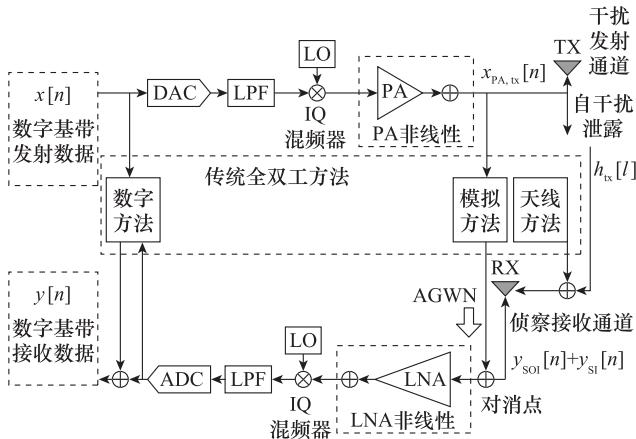
(a)传统的全双工系统
(a) Traditional full-duplex system
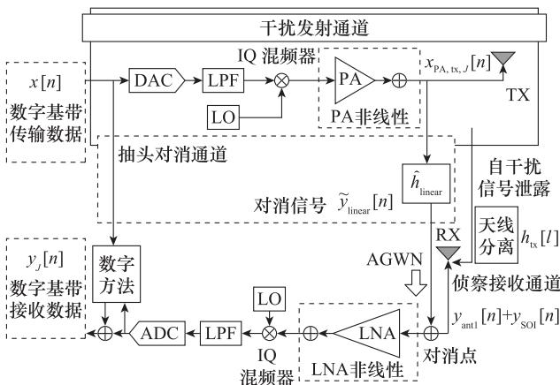
(b)本文提出的全双工系统架构
(b) The proposed full-duplex system architecture
图1 全双工系统架构
Fig．1 Fullduplexsystemarchitecture
数值仿真结果表明，通过二次转发，可形成较理想的假 目标，本文提出的方法可以实现约110dB左右的自干扰抑 制性能。本文还提出两种神经网络结构 AI1（artificialin telligence1）和 AI2（artificialintelligence2），神经网络方法 比传统的方法具有更优的实时性性能，其中 AI2具有更高 的实时性。搭建了实验平台，实验结果表明 AI2具有更强 的自干扰抑制性能和实时性性能。
1．1．1 雷达发射通道¶
本文采用数字信号模型来描述各个通道中的非线性效 应。在数字域中，基带线性调频（linearfrequencymodula ted，LFM）信号可以表示为
式中： \(n\) 代表采样索引。LFM 率可以表示为 \(k = B / T _ { \mathrm { F M } }\) ，犅 表示信号带宽， \(T _ { \mathrm { F M } }\) 表示LFM 时间。
随后，信号通过IQ混频器进行处理。由于器件的精度 有限，引入了共轭信号分量。同时，本振的频偏效应也会在 IQ混频器的输出端引入 PN。IQ 混频器的IQ 不平衡效 应，可以使用以下数学形式表示：
其中，共轭分量的强度为 \(\eta _ { \mathrm { t x } }\) 。IQ混频器质量，可以用镜像 反射比例（imagerejectionratio，IRR）来衡量［3］，其数学表 示式可以表示为 \(\mathrm { I R R } { = } \mid \eta _ { \mathrm { t x } } \mid { - 2 }\) 。由于本振的频率和相位误 差引起的PN可以表示为
式中： \(\Phi ( \cdot )\) ）表示PN； \(f _ { 0 }\) 表示载波频率。信号经过非线性系 统，从基带信号上变频为射频信号。假设 LO使用的是自 激振荡器，可以将其PN建模为
式中： \(\beta\) 代表PN洛伦兹谱的3dB带宽； \(\tau\) 是间隔时间； \(\varPhi ( \tau )\) 表示PN函数。PN函数服从高斯分布。
信号经过PA进行功率放大。然而，由于PA往往工作 于非线性区域，信号在发射过程中会受到非线性效应的影 响引入谐波信号。在本系统中，不考虑功放的记忆效应，使 用Rapp模型对功放进行建模。Rapp模型是一种非线性模 型，可以表示为
式中： \(V _ { \mathrm { s a t } } \setminus g\) 和 \(s\) 分别表示饱和电压、信号增益和平滑因子。 信号经过PA，其输出信号可以表示为
此外，根据PA的输入输出特性曲线，说明功放输出的 幅度和相位失真都不依赖于输入相位［3］。因此，PA的输出 可以与 \(\mathrm { P N } \ \varPhi ( \cdot )\) ）解耦，可以表示为
式中： \(\tilde { x } _ { \mathrm { P A , t x } } \big [ n \big ] = f _ { \mathrm { P A } } \left( x _ { \mathrm { I Q , t x } } \big [ n \big ] \right)\) ）。发射机由于系统的非理 想因素，会引入随机噪声。在本文中，简化为 AWGN，可以 表示为
式中： \(z [ n ]\) ］表示 AWGN， \(z [ n ]\) ］的实部和虚部可以分别表 示为
在本文中，简化发射系统的 AWGN功率比理想发射信 号低 \(6 0 ~ \mathrm { d B }\) 。
1．1．2 雷达无线通道¶
雷达发射信号会作用于探测目标和干扰机的接收机。 目标反射一部分电磁波能量回到雷达接收机，其反射强度 与雷达散射截面积（radarcrosssection，RCS）有关。雷达 发射功率为
式中： \(\sigma\) 为 RCS；电磁波的波长可以表示为 \(\lambda { = } _ { \operatorname { c } } / f\) ；TX和 RX增益分别为 \(G _ { t }\) 和 \(G _ { r }\) ；犚 为探测目标距离雷达的距离。 式（11）主要用于仿真时对感兴趣目标回波功率估计，但在 实际情况下，雷达的感兴趣回波功率是未知的。唯有采用 探扰一体化认知传感器或分布式组网平台的数据融合，才 能较为精确地探测雷达的发射功率、定位雷达的空间位置， 并实时获取目标位置的信息。雷达信号，经过路径损耗，达 到干扰机接收机时的能量衰减（以dB表示）可以用下面的 公式进行表示：
式中：犱 表示雷达距离干扰机接收机的距离。
1．1．3 雷达接收通道¶
通过LNA提升探测距离。然而，进入雷达接收机的信 号包括全双工干扰机的转发干扰信号和目标回波信号， LNA在放大回波信号的同时也会放大转发干扰信号。 LNA的输出信号通过IQ混频器将其下变频至基带信号。 雷达接收机天线接收到的信号可以表示为
式中： \(y _ { t } \left[ n \right]\) ］和 \(y _ { \mathrm { J a m m e r } } [ n ]\) ］分别为目标回波和转发干扰，其功 率强度可以从第1．1．1节中得到估算。
接收机中的LNA与发射机中的PA使用相同的模型， 在此不再详述。LNA在将信号功率放大了30dB的同时， 会引入非线性效应。此外，本文采用分离的本振，这意味着 当传播域自干扰隔离性能不够时，PN比本振共享更容易导 致自干扰抑制性能的恶化。由于非线性效应的存在，LNA 的输出信号可以表示为
接收机引入的高斯随机噪声，在本文中能量为－100dBm， 本文中用 AWGN \(z _ { r } [ n ]\) ］表示：
信号经过IQ混频器进行处理。通过下变频，LNA将 输出转换为模拟基带信号。然而，在接收过程中，接收信 号会受到接收机PN \(\boldsymbol { \varPhi } ^ { \prime } \left( \boldsymbol { n } \right)\) ）的影响，这用数学方式可以表 示为
接收信号受到接收机的IQ不平衡影响，可以用数学方 式表示为
式中： \(\eta _ { \mathrm { r x } }\) 表示接收机中由于IQ不平衡引入的镜像分量强 度。值得注意的是，接收机中的IQ不平衡和PN的顺序与 发射机中是相反的，即IQ不平衡发生在PN之后。为验证 干扰机对雷达的作用效果，在雷达接收机中对信号进行匹 配滤波。匹配滤波的原理如下所示：
式中：表示卷积运算符。
1．2 全双工干扰机系统非线性模型¶
由于全双工干扰机模型与雷达模型有重合之处，本节 中将重复部分省略。重点阐述两个系统模型的不同之处。
1．2．1 干扰发射通道¶
干扰发射通道与雷达发射通道模型类似，因此直接给 出干扰机的功率放大后的数学表示为
式中： \(\mathcal { X } _ { \mathrm { P A } , \mathrm { t x } , J }\) ［狀］表示全双工干扰机的功放输出信号； \(z _ { J } \left[ n \right]\) 表示干扰机发射模块引入的 AWGN，其输出信号包括IQ 不平衡，PN和功放非线性3种非理想因素。
1．2．2 无线通道¶
全双工干扰机与半双工雷达不同，需要考虑自干扰这 一因素。进入全双工干扰机的信号主要分为两个部分：雷 达信号作为干扰机的SOI进入干扰机的接收机；另一部分 是自干扰信号。由于空间限制，首先将自干扰信号的功率 降低至接收机的动态范围内，以避免接收机饱和。全双工 收发系统面临的挑战在于能够实时应对时变信道，并对变 化后的新信道进行实时建模和快速训练，以最大程度地减 少训练的时间开销。
全双工干扰机具有突出的优势，具有更少的应对波形 捷变的响应时间，能够转发完整波形适应智能波形对抗场 景。为了减轻模拟域和数字域自干扰消除的压力，采用天 线分离的方法，天线分离产生的自干扰衰减为 \(4 0 \ \mathrm { d B }\) 。考虑 到室内环境的多径反射效应，使用 \(h _ { \mathrm { t x } } [ l ]\) 对发射机和接收机 之间的无线信道进行建模，经过无线信道的自干扰信号可 以用数学式表示为
式中： \(\tau _ { \mathrm { t x } }\) 表示发射机和接收机之间的传播延迟； \(T _ { s }\) 表示采 样时间。此外，雷达信号经过无线信道衰减并进入干扰机 的接收机，则进入全双工干扰机接收机中的信号可以表 示为
式中： \(y _ { \mathrm { S O I } } [ n ]\) 为全双工干扰机的SOI即雷达信号。
1．2．3 侦察接收通道¶
为了降低数字域中自干扰对消的压力，首先在天线处 对自干扰信号的线性部分进行单抽头实时对消。其他非线
性部分将在接收机的数字域中进行对消。天线处自干扰对 消点的输出信号可以表示为
式中： \(\widetilde { y } _ { \mathrm { l i n e a r } } [ n ]\) ］为单抽头实时对消信号； \(y _ { \mathrm { a n t } } \left[ n \right]\) ］表示进入接 收机中的信号，其中包括雷达信号。由于属于实时对消，因 此该抽头的延迟应与直接耦合通道延迟匹配。信号进入 LNA和IQ混频器与雷达系统模型相同，在此省略。因为 采用直接转发干扰，直接将数字域接收到的信号转发出去， 而不进行复杂的波形调制。数字域转发信号可以表示为
式中： \(\eta _ { \mathrm { r x } , J }\) 代表接收机中IQ混频器的镜像分量的幅度。
2 两种数字域自干扰对消方法¶
2．1 传统的信号模型建模及模型求解¶
在这项工作中，为求解非线性自干扰信道参数采用了 并行 Hammerstein模型。该模型没有记忆性，但可以准确 描述PA的非线性互调失真特性。该模型的数学表示式 如下：
非线性失真系数 \(\alpha _ { \phi }\) 表示 \(P\) 阶非线性失真系数。通过 利用信号的共轭形式，可以将 PA 输出信号的并行 Ham merstein逼近表示为以下形式：
实际求解和运算时，不可能求解无限高阶的近似，因此 此处真实求解时存在求解近似，其中 \(\varsigma _ { q , \boldsymbol { p } - \boldsymbol { q } }\) 包括发射机IQ不 平衡系数 \(\eta _ { \mathrm { t x } }\) 。虽然发射机的PN被包括在内，但在所提出 的算法中将其忽略，即 \(\Phi ( \cdot ) \approx 0\) 。估计是一项具有挑战性 的任务。为了简化数学表达，定义 \(\Psi _ { P , q } [ n ]\) ］如下：
则PA的输出信号可以重写为
该模型的参数包括了IQ不平衡和PA的非线性。因 此，该模型能够有效地减轻这两种射频非理想因素和多径 效应引起的自干扰。然而，值得注意的是，该模型的求解没 有考虑PN、高斯白噪声、ADC和DAC的量化噪声的影响。 此外，在模型求解时，干扰机的剩余自干扰中，不存在SOI。 在全双工系统中，接收机在数字域内的自干扰信号可以表 示为
式中：
\(h _ { \mathrm { t x } } [ l ]\) 表示主发射天线与接收天线之间的无线信道 \(z _ { \mathrm { a l l } } \left[ n \right]\) 表示所有加性噪声，包括 \(z [ n ]\) ］和模型之外的非线性失真。
通过有限信号序列构建非线性特征信道矩阵，并利用时域 最小二乘（leastsquares，LS）方法对特定样本进行模型参 数估计。然而，估计时忽略了 LNA的影响，因此在数字域 中接收到的自干扰信号可以表示为
当观测到 \(M\) 个样本时，接收到的剩余自干扰信号序列向量 记为 \(\textbf { { y } }\) ，可以表示为
式中：
式中： \(z _ { \mathrm { a l l } } \left[ n \right]\) 代表包括 \(z [ n ]\) 、估计误差和高于 \(P\) 阶的非线性 失真。因此， \(\pmb { X }\) 可以表示为一个向量矩阵，具体形式由下式 给出：
模型参数 \(h\) 使用LS法进行估计，其结果可以表示为
该方法的数学核心是寻找一个正交信号空间，在这个 特征信号空间中存在着许多相互正交的子特征。通过算 法，在这个正交信号空间中找到了复杂的非线性自干扰信 号的位置坐标。这个空间可以由参考信号或经过校正的 参考信号和自干扰信道特征组成，而特征空间的形成规律 是已知的。问题的关键在于转化为在一个更简单、优化的 特征空间中寻找解，这个空间的参数更少，从而可以更快 地使用优化算法找到复杂且缓慢变化的非线性自干扰信 道的特征坐标。由于自干扰信道的参数具有缓慢变化的 特性，这意味着需要定期重新估计这些参数，因此需要提 高方法的实时性，减少时变性对全双工系统稳定运行的不 利影响。
2．2 神经网络数字域自干扰对消¶
全双工系统要求估计周期尽可能短，全双工研究的目 标是提出一种有效且快速收敛的网络方法。这种方法既可 以解决高精度建模的问题，又需要平衡实时性要求。本文 采用两种神经网络结构，仿真数据表明，这些结构都能实现 18dB以上的数字域自干扰抑制性能。图2展示了本文提 出的两种神经网络结构。当神经元个数较少时，AI2相对 于 AI1具有明显的优势。仿真结果表明，AI1和 AI2都能 够实现近20dB的数字域自干扰抑制性能，但是 AI2在自 干扰抑制性能方面稍微优于 AI1。随着神经元个数的减 少，这种性能优势将变得更加明显。
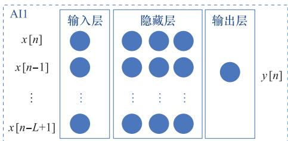
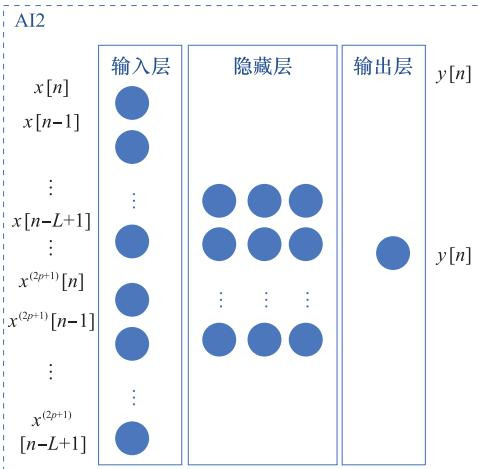
图2 两种神经网络架构
Fig．2 Twoneuralnetworkarchitectures
3 关键时间节点切片分析¶
针对波形变化前后的动态过程开展时间切片观测，详 情如图2所示，并归纳出5个步骤。其一，步骤1中转发干 扰机把携带有先验信息的雷达信号传输至雷达接收机。随 后，步骤2里全双工干扰机将剩余自干扰信号（residualself interferencesignal，RSI）与雷达信号的混合信号不加区分地 予以转发。紧接着，步骤3呈现出雷达信号发生捷变，步骤4 则是对捷变波形与剩余自干扰进行转发，步骤5为二次转发 全新波形，且这一转发流程会循环往复多次。不管是雷达信 号的变动，还是剩余自干扰信号的改变，均会对转发信号的 波形产生作用。整个动态进程始终朝着SOI逐步靠近。
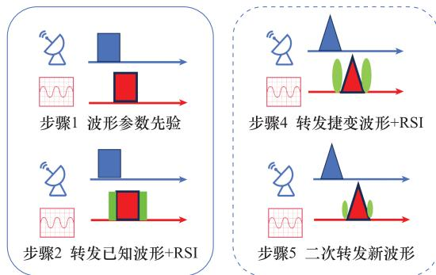
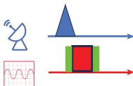
步骤3 雷达波形捷变
图3 关键时间节点切片
Fig．3 Keytimeslotslicing
4 数值仿真及性能分析¶
发射天线和接收天线之间的直接耦合可以建模为具有 \(K\) 因子的Rice信道，而多径信道可以建模为瑞利衰落信道。 另外，Ω表示总功率，包括直达路径功率和多径反射路径功 率。无线信道的模型长度为4，3个多径信号的幅度比为［1， 0．1，0．01］。数值仿真参数如表1所示，变化后的雷达LFM 信号的参数：载频为 \(9 . 5 \ \mathrm { G H z }\) ，带宽为 \(1 . 5 \ \mathrm { G H z }\) 。
表1 仿真参数
犜犪犫犾犲1 犛犻犿狌犾犪狋犻狅狀狆犪狉犪犿犲狋犲狉狊
| 参数 | 取值 |
| 载频频率/GHz | 10 |
| 带宽/GHz | 1 |
| 无线信道长度 | 4 |
| K/dB | 30 |
| 主通道延迟/ns | 2 |
| IRR/dB | 30 |
| PN 3 dB带宽/Hz | 50 |
| PA平滑参数 | 3 |
| 回退功率/dB | 0 |
| 接收机底噪/dBm | -100 |
图4（a）是具有完美信号参数先验转发干扰和目标回波的 雷达匹配滤波结果。第1个峰表示目标峰的位置，而第2个峰 表示假目标的位置。假目标的数量和位置都可以进行调 整。图4（b）是实时转发信号与目标回波的雷达匹配滤波 结果。由于仅进行了射频域衰减和模拟域线性对消处理， 依然存在较多的剩余自干扰。因此，匹配后的假目标峰值 强度会降低。非线性系统的多径效应和非线性效应可能是 存在多个假目标峰的主要原因。
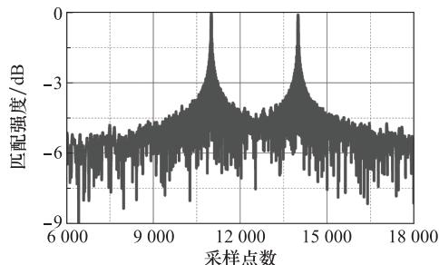
(a)步骤1中雷达匹配滤波结果
(a) Radar matched filtering result of step 1
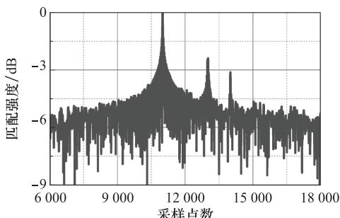
(b)步骤2中雷达匹配滤波结果
(b) Radar matched filtering result of step 2
图4 雷达信号参数已知情形
Fig．4 Knownradarsignalparameters
在本文中，通过表2详细描述所提出的自干扰对消方 法。在表2中，括号内注明了所使用对消方法的适用范围 以及该方法所需的时间。自干扰需要实时对消，因此算法 实时性十分关键。
表2 全双工干扰机自干扰对消方法
犜犪犫犾犲2 犛犲犾犳犻狀狋犲狉犳犲狉犲狀犮犲犮犪狀犮犲犾犾犪狋犻狅狀犪狆狆狉狅犪犮犺犲狊犳狅狉 犳狌犾犾犱狌狆犾犲狓犼犪犿犿犲狉
| 方法 | 内容 |
| base(传播域+模拟域) | 天线分离+单抽头 |
| LS(数字域, 48 ms) | 传统建模与模型求解 |
| AI1(数字域, 31.9 ms) | 神经网络(AI1) |
| AI2(数字域, 23.9 ms) | 神经网络(AI2) |
图5展示了本文所提自干扰对消方法的自干扰抑制性 能。通过IQ混频器将基带信号变频为射频信号后，PA输 出信号的功率谱密度函数的中心频率在 \(1 0 \ \mathrm { { G H z } }\) 。值得注 意的是，在全双工干扰机的自校准学习阶段，需要排除雷达 SOI的影响，否则可能会导致学习阶段收敛后，新自干扰信 道部分对消SOI。图5中，ideal表示全双工数字基带输出 信号序列的功率谱密度函数，PA表示功放输出信号的功率 谱密度函数，其他4条曲线表示经过对应方法后剩余自干 扰信号的功率谱密度函数。图6展示的是，在雷达波形捷 变为新波形的瞬间，干扰机发射旧波形时雷达进行匹配滤 波后的结果。由于信号参数不匹配，匹配滤波结果中的假 目标消失。与理想回波匹配结果相比，匹配结果略有恶化。
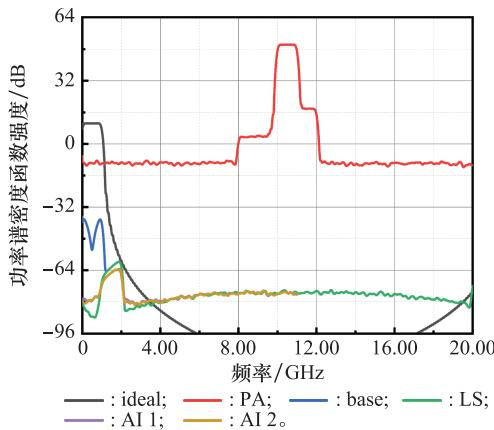
图5 本文所提自干扰对消方法剩余自干扰功率谱密度函数
Fig．5 Residualselfinterferencepowerspectraldensityfunctionofthe proposedselfinterferencecancellationapproach
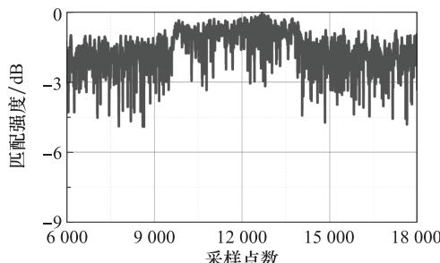
(a)步骤3中仅于扰信号雷达匹配滤波结果
(a) Matched filtering result of only the interference radar signal of step 3
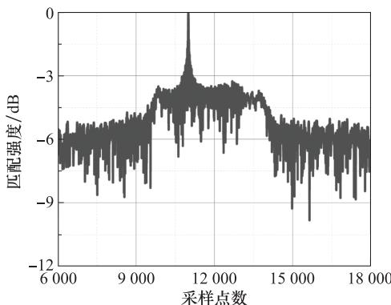
(b)步骤3中雷达匹配滤波结果
(b)Radar matched filtering result of step 3
图6 雷达捷变而干扰机不变情形
Fig．6 Scenarioofradaragilewhilejammerremainsfixed
图7（a）展示了经过基本方法后的转发干扰匹配滤波结 果。图7（b）中，传统数字域自干扰对消方法实现了118．7dB 的自干扰抑制性能。通过对比图7（a）和图7（b），说明更好 的自干扰抑制性能明显改善了转发干扰的效果。考虑到已 知雷达信号波形参数先验情形，虽然假目标匹配强度存在 一定程度的恶化，但是假目标位置清晰。此外，图7（c）显示 二次转发干扰效果可以与已知信号参数的情况相似。由于 存在剩余自干扰和非线性效应，在真实目标之前产生了假 目标。
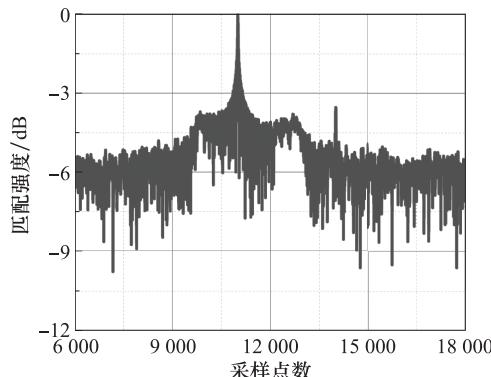
(a)步骤4中仅base对消雷达匹配滤波结果
(a) Matched filtering result of only the base cancellation in radar of step 4
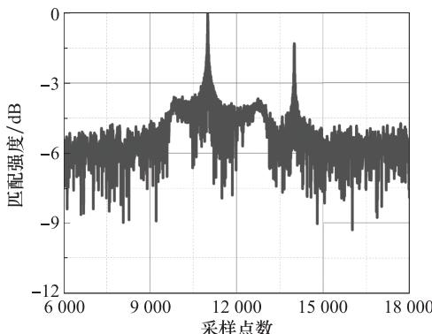
(b)步骤4中的传统数字对消雷达匹配滤波结果
(b)Matched filtering result of traditional digital cancellation in radar of step 4
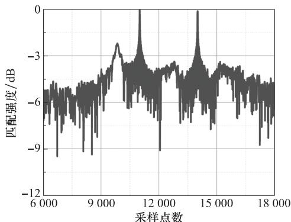
(c)步骤5中的传统数字对消雷达匹配滤波结果
(c)Matched filtering result of traditional digital cancellation in radar of step 5
图7 传统方法一次转发和二次转发情形
Fig．7 Scenariooftraditionalmethodsforsingletransmissionand doubletransmission
图8和图9分别展示了两种基于神经网络结构的数字 对消方法，即 AI1和 AI2。这些方法在自干扰抑制性能方 面表现优异，可以达到108dB的水平。通过二次转发信号 匹配滤波的结果显示，假目标与真实目标的强度几乎相同。 值得注意的是，增加神经元个数和神经元规模会使得自干 扰抑制深度优于传统的数字域方法。
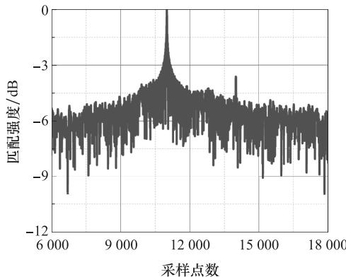
(a)步骤4中使用AI1网络对消雷达匹配滤波结果
(a) Matched filtering result of radar using AI1 network for cancellation of step 4
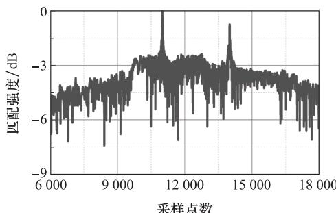
(b)步骤5中使用AI1网络对消雷达匹配滤波结果
(b) Matched filtering result of radar using AI1 network for cancellation of step 5
图8 AI1一次转发和二次转发情形
Fig．8 ScenarioofAI1forsingletransmissionand doubletransmission
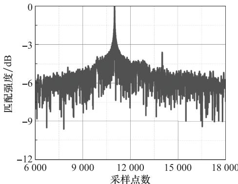
(a)步骤4中使用AI2网络对消雷达匹配滤波结果
(a) Matched filtering result of radar using AI2 network for cancellation of step 4
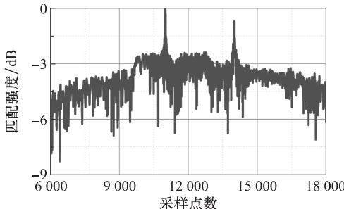
(b)步骤5中的使用AI2网络对消雷达匹配滤波结果
(b) Matched filtering result of radar using AI2 network for cancellation of step 5
图9 AI2一次转发和二次转发情形
Fig．9 ScenarioofAI2forsingletransmissionand doubletransmission
图10（a）是实验的系统设置，通过任意信号发生器（ar bitrarysignalgenerator，ASG）发射基带信号，经过混频后， 通过带通滤波器（bandpassfilter，BPF），经过功放和天线 发射后，进入接收机最后通过示波器将自干扰信号采下来。 框图下表示的是器件的型号名。图10（b）展示了在相同的 实验环境下，使用实际测量数据时，不同传统方法与本文提 出的方法在自干扰抑制性能上的比较。本文所采用的网络 结构包括前馈神经网络和全连接层。为了应对复杂的时变 效应，通过优化输入矩阵向量和网络结构来提高算法的实 时性。在网络结构中，采用最少的神经元结构以获得最佳 的自干扰抑制效果。为了比较本文提出的方法与传统方法 的性能差异，本文对在相同场景下不同方法的自干扰抑制 效果进行了对比。理论上，自干扰抑制性能越强，越能满足 实际应用的需求。表3列出了采用不同方法的自干扰抑制 性能。LS方法使用64个数据点进行训练，然后拓展至 2048个数据点的波形进行自干扰抑制；神经网络方法使用 128个数据点进行训练，再将其拓展至2048个数据点的波 形进行自干扰抑制，隐藏神经元层数为1神经元数量设置为 5，并采用前馈神经网络的全连接层。AI1代表1个输入单元 和1个输出单元；AI2包含2个输入神经元和1个输出神经 元。实验在室内环境中进行，考虑到了不可忽视的多径效 应。通过对比实时性和自干扰抑制性能，所提网络模型结 构表现出更高的自干扰抑制性能和更好的实时性。需要注
意的是，实验中得到的实时性不能简单看作为实际消耗时 间，因为特殊的软硬件设计可以显著提升其实时性。然而， 不同方法得到的消耗时间是基于相同平台的，可以用来评 估其相对实时性。由表3可知，AI2和 AI1的训练消耗时 间分别为 \(1 8 7 5 ~ \mathrm { m s }\) 和 \(9 8 3 , 9 \mathrm { ~ m s }\) ，剩余自干扰重建时间分别 为 \(3 3 9 ~ \mathrm { m s }\) 和 \(7 2 . 6 ~ \mathrm { m s }\) 。
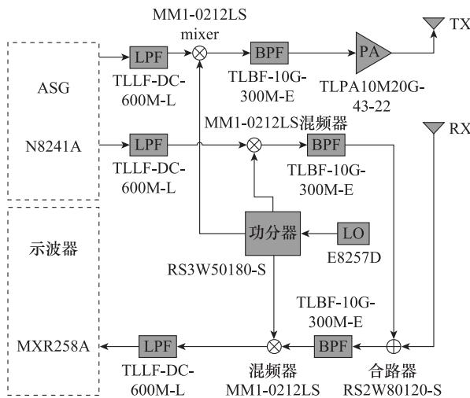
(a)实测系统的系统设置
(a) System settings of the measured system
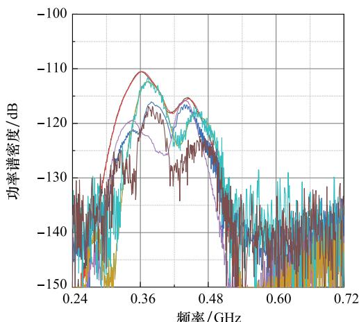
(b)不同数字域方法的自干扰抑制性能
(b)Performance of self-interference suppression for different digital domain methods
—：对消前信号; ：宽带补偿参考信号;
：方法1对消后RSI; ：方法2对消后RSI;
：方法3对消后RSI；—：方法4对消后RSI;
：方法5对消后RSI；—：方法6对消后RSI。
图10 实验系统与不同数字域方法自干扰抑制效果
Fig．10 Experimentalsystemandselfinterferencesuppression effectsusingdifferentdigitaldomainmethods
表3 不同数字域方法实测性能
犜犪犫犾犲3 犃犮狋狌犪犾狆犲狉犳狅狉犿犪狀犮犲狅犳犱犻犳犳犲狉犲狀狋犱犻犵犻狋犪犾犱狅犿犪犻狀犿犲狋犺狅犱狊
| 方法名 | 内容 | 训练消耗时间/ms | 剩余自干扰重建时间/ms | 自干扰对消性能/dB |
| 方法1 | LS | 0.58 | 0.26 | 4.75 |
| 方法2 | LS(无多径效应) | 0.25 | 0.12 | 3.13 |
| 方法3 | LS(无非线性效应) | 0.23 | 0.09 | 6.05 |
续表3 犆狅狀狋犻狀狌犲犱犜犪犫犾犲3
| 方法名 | 内容 | 训练消耗时间/ms | 剩余自干扰重建时间/ms | 自干扰对消性能/dB |
| 方法4 | LS(仅线性) | 0.37 | 0.14 | 3.12 |
| 方法5 | AI1 | 1875 | 339 | 3.21 |
| 方法6 | AI2(考虑多径效应) | 983.9 | 72.6 | 7.29 |
5 结 论¶
在高威胁信号多变场景下，全双工干扰机的应用需求 迫切。然而，剩余自干扰信号的存在对干扰效果产生了抑 制作用，提升自干扰对消性能成为全双工干扰机的核心目 标。本文通过关键时间节点的切片，详细分解波形捷变动 态变化过程，并充分展现其过程中的干扰效果。尽管整个 动态过程可能在毫秒级别完成，但可见窗口的持续时间有 限，因此对算法的实时性提出要求。信道的时变特性会导 致全双工自干扰抑制性能的恶化，并增加雷达识别被掩护 目标的机会。因此，未来可以专注于时变信道的研究，以实 现快速自适应时缓变的自干扰信道参数的变化。本文考虑 更加复杂的系统非线性效应，并同时提出全双工自干扰对 消方法。仿真结果表明，使用本文提出的方法可以实现 118．7dB的自干扰抑制性能。二次转发的干扰效果接近于 已知信号参数时的性能。本文还提出两种神经网络结构， 神经网络方法比传统的方法具有更优的实时性性能，其中 AI2具有更高的实时性。神经网络方法实现了108．3dB的 自干扰抑制性能，并且二次转发时的假目标匹配滤波强度 与真实回波接近。实验测试结果与仿真结果一致，说明 AI2具有更高的性能和更强的实时性。
参考文献¶
［1］CHENYN，DINGC，JIAYT，etalAntenna／propagationdo mainselfinterferencecancellation（SIC）forinbandfullduplex wirelesscommunicationsystems［J］．Sensors，2022，22（5）：1699
［2］DUARTE M，DICKC，SABHARWALA．Experimentdriven characterizationoffullduplexwirelesssystems［J］．IEEETrans onWirelessCommunications，2012，11（12）：4296 4307
［3］FUKUIT，KOMATSUK，MIYAJIY，etal．Analogselfinter ferencecancellationusingauxiliarytransmitterconsideringIQ imbalanceandamplifiernonlinearity［J］．IEEETrans．onWire lessCommunications，2020，19（11）：7439 7452
［4］JAIN M，CHOIJI，KIMTM，etal．Practical，realtime，full duplexwireless［C］∥Proc．ofthe17th AnnualInternational ConferenceonMobileComputingandNetworking，2011
［5］KIAYANIA，ANTTILAL，VALKAMAM．ActiveRFcancel lationofnonlinearTXleakageinFDDtransceivers［C］∥Proc．of theIEEEGlobalConferenceonSignalandInformationProcess ing，2016
［6］KOMATSUK，MIYAJIY，UEHARAH．Basisfunctionselec tionoffrequencydomainHammersteinselfinterferencecanceller forinbandfullduplex wirelesscommunications［J］．IEEE Trans．onWirelessCommunications，2018，17（6）：3768 3780
［7］LIUY，QUANX，PANWS，etal．Digitallyassistedanalogin terferencecancellationforinbandfullduplexradios［J］．IEEE CommunicationsLetters，2017，21（5）：1079 1082
［8］陈嘉贝，王青平，叶源，等．基于NSGAⅡ的波前相位畸变特性 分析［J］．系统工程与电子技术，2022，44（5）：1439 1446 CHENJB，WANG QP，YEY，etalAnalysisonwavefront phasedistortioncharacteristicsbasedonNSGAⅡ［J］．Systems EngineeringandElectronics，2022，44（5）：1439 1446
［9］QUANX，LIUY，SHAOSH，etal．Impactsofphasenoiseon digitalselfinterferencecancellationinfullduplexcommunica tions［J］．IEEE Trans．onSignalProcessing，2017，65（7）： 1881 1893
［10］SNOW T，FULTONC，CHAPPELL WJ．Transmitreceive duplexingusingdigitalbeamformingsystemtocancelselfinter ference［J］．IEEETrans．onMicrowaveTheoryandTechniques， 2011，59（12）：3494 3503
［11］ZOUQY，TARIGHATA，SAYEDAH．Jointcompensation ofIQimbalanceandphasenoiseinOFDM wirelesssystems［J］ IEEETrans．onCommunications，2009，57：404 414
［12］ZHUHY，HUANGJJ，WANG C，etal．Multidomainselfin terferencecancellationmethodsconsideringRFimperfections［J］ IEEETrans．on WirelessCommunications，2024，23（8）： 8668 8682
［13］KONGDH，KILYS，KIMSH．Neuralnetworkaideddigital selfinterferencecancellationforfullduplexcommunicationover timevaryingchannels［J］．IEEETrans．onVehicularTechnology， 2022，71（6）：6201 6213
［14］ZHANGJ，HEF，LIW，etal．Selfinterferencecancellation： acomprehensivereviewfromcircuitsandfieldsperspectives［J］ Electronics，2022，11（2）：172
［15］LUOH，HOLM M，RATNARAJAHT．Ontheperformance ofactiveanalogselfinterferencecancellationtechniquesforbe yond5Gsystems［J］．ChinaCommunications，2021，18（10）： 158 168
［16］KWAKJW，SIM MS，KANGIW，etal．Analogselfinter ferencecancellationwithpracticalRFcomponentsforfulldu plexradios［J］．IEEE Trans．on WirelessCommunications， 2023，22（7）：4552 4564
［17］ZHUXS，CHENW，WUQQ，etal．PerformanceofRISas sistedfullduplexspaceshiftkeyingwithimperfectselfinterfe rencecancellation［J］．IEEEWirelessCommunicationsLetters， 2023，13（1）：128 132
［18］HONGZH，ZHANGL，LIW，etal．FrequencydomainRF selfinterferencecancellationforinbandfullduplexcommuni cations［J］．IEEETrans．onWirelessCommunications，2022， 22（4）：2352 2363
［19］KIMSM，LIM YG，DAIL，etal．Performanceanalysisof selfinterferencecancellationinfullduplexmassiveMIMOsys tems：subtractionversusspatialsuppression［J］．IEEETrans onWirelessCommunications，2022，22（1）：642 657
［20］ZHU HY，WANGC，YUANNC，etal．Multidomainblind sourceseparationinbandfullduplextechniqueconsideringRF impairments［J］．JournalofPhysics：ConferenceSeries，2023， 2625（1）：012060
［21］LIAO WS，ZHAOO，LIK，etal．Implementationofinband fullduplexusingsoftwaredefinedradio withadaptivefilter basedselfinterferencecancellation［J］．FutureInternet，2023， 15（11）：360
［22］KOLODZIEJKE，COOKSONAU，PERRYBT．RFcancel lertuningaccelerationusingneuralnetworkmachinelearning forinbandfullduplexsystems［J］．IEEEOpenJournalofthe CommunicationsSociety，2021，2：1158 1170
［23］ETELLISIE A，ELMANSOURI M A，FILIPOVIC D S WidebandmultimodemonostaticspiralantennaSTARsubsys tem［J］．IEEETrans．onAntennasandPropagation，2017，65（4）： 1845 1854
［24］LIANR，SHIH TY，YINY，etal．Ahighisolation，ultra widebandsimultaneoustransmit and receive antenna with monopolelikeradiationcharacteristics［J］．IEEETrans．onAn tennasandPropagation，2017，66（2）：1002 1007
［25］LAUGHLINL，ZHANGC，BEACH MA，etal．Tunablefre quencydivisionduplexRFfrontendusingelectricalbalanceand activecancellation［J］．IEEETrans．onMicrowaveTheoryand Techniques，2018，66（12）：5812 5824
［26］ZAMANIFEKRIA，SMOLDERSAB．Beamsquintcompensa tionincircularlypolarizedoffsetreflectorantennasusingase quentiallyrotatedfocalplanearray［J］．IEEE Antennasand WirelessPropagationLetters，2014，14：815 818
［27］DINCT，CHAKRABARTIA，KRISHNASWAMY H．A60GHz samechannelfullduplexCMOStransceiverandlinkbasedon reconfigurablepolarizationbasedantennacancellation［C］∥ Proc．oftheIEEERadioFrequencyIntegratedCircuitsSympo sium，2015：31 34
［28］KORPID，HEINO M，ICHELN C，etal．Compactinband fullduplexrelayswithbeyond100dBselfinterferencesuppres sion：enablingtechniquesandfield measurements［J］．IEEE Trans．onAntennasandPropagation，2016，65（2）：960 965
［29］ZHANGZY，YUANYQ，CANGJ，etal．Anorbitalangular momentumbasedinbandfullduplex communication system
andits modeselection［J］．IEEE CommunicationsLetters， 2017，21（5）：1183 1186
［30］WUJ，LIM，BEHDADN．Awideband，unidirectionalcircu larlypolarizedantennaforfullduplexapplications［J］．IEEE Trans．onAntennasandPropagation，2018，66（3）：1559 1563
［31］PANSEV，JAINTK，SHARMAPK，etal．Digitalselfin terferencecancellationintheeraofmachinelearning：acom prehensivereview［J］．PhysicalCommunication，2022，50：101526
［32］吴飞，邵士海，唐友喜．一种基于多天线波束成形的全双工自 干扰抵消算法［J］．电子学报，2017，45（1）：8 15 WUF，SHAOS H，TANG Y X．Anovelselfinterference cancellationalgorithmusingmultiantennabeamforminginfull duplexsystem［J］．ActaElectronicaSinica，2017，45（1）：8 15
［33］吴翔宇，沈莹，唐友喜，等．室内环境下共用收发天线同时同 频全双工自干扰信道测量与建模［J］．系统工程与电子技术， 2015，37（9）：2148 2155 WU X Y，SHEN Y，TANG Y X，etal．Measurementand modelingofcotimecofrequencysingleantennafullduplexself interferencechannelinindoorenvironment［J］．SystemsEngi neeringandElectronics，2015，37（9）：2148 2155
［34］MASMOUDIA，LENGOCT．Channelestimationandselfin terferencecancelationinfullduplexcommunicationsystems［J］ IEEETrans．onVehicularTechnology，2017，66（1）：321 334
作者简介¶
朱虹宇（1994—），男，博士研究生，主要研究方向为全双工。
胡卫东（1967—），男，教授，博士，主要研究方向为目标识别、复杂波 形设计。
王 超（1977—），男，副教授，博士，主要研究方向为电子对抗。
施庆展（1990—），男，讲师，博士，主要研究方向为雷达信号处理、电 子对抗。
张曦蒙（1995—），男，博士研究生，主要研究方向为组网通信目标的 定位与跟踪。
袁乃昌（1965—），男，教授，博士，主要研究方向为复杂电磁环境电子 对抗。